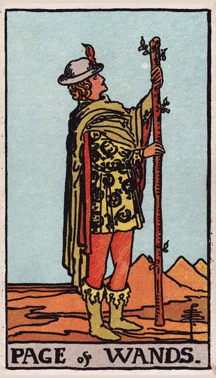

正位置ワンドのペイジの正位置
キーワード：好奇心・うれしい知らせ・挑戦心
恋愛
新しい恋へのワクワクした気持ちが高まる時です。
相手の気持ちあなたのことが気になって、ドキドキしているようです。
この先楽しい恋の始まりがありそうです。
アドバイス気になる相手には、素直な好意を伝えてみましょう。
気をつけること飽きっぽさが、相手を不安にさせないように。
この先楽しい恋の始まりがありそうです。
アドバイス気になる相手には、素直な好意を伝えてみましょう。
気をつけること飽きっぽさが、相手を不安にさせないように。
人間関係
好奇心から、新しい人との出会いが広がる時です。
相手の気持ちあなたに興味を持っているようです。
この先新しい友だちができそうです。
アドバイス興味のあるイベントや集まりに参加してみましょう。
気をつけること軽いノリで、約束しすぎないように。
この先新しい友だちができそうです。
アドバイス興味のあるイベントや集まりに参加してみましょう。
気をつけること軽いノリで、約束しすぎないように。
仕事・学業
新しいことを学び、挑戦したくなる時期です。
この先学んだことが、次のチャンスにつながりそうです。
アドバイス初心者の気持ちで、新しいことを学びましょう。
気をつけること始めたことを、途中で投げ出さないように。
アドバイス初心者の気持ちで、新しいことを学びましょう。
気をつけること始めたことを、途中で投げ出さないように。
お金
お金について、学び始めるのに良い時です。
この先学んだことが、あとで役に立ちそうです。
アドバイスお金の基本を、少し調べてみましょう。
気をつけること気になる物を、次々に買わないように。
アドバイスお金の基本を、少し調べてみましょう。
気をつけること気になる物を、次々に買わないように。
生活
新しい楽しみに、わくわくできる時です。
この先新しい楽しみが見つかりそうです。
アドバイス気になるお店や場所に、出かけてみましょう。
気をつけること興味が移りすぎて、散らかさないように。
アドバイス気になるお店や場所に、出かけてみましょう。
気をつけること興味が移りすぎて、散らかさないように。
今日の運勢
うれしい知らせや誘いが届きそうな日です。
この先ワクワクする知らせがありそうです。
アドバイス思い立ったら、軽い気持ちで試してみましょう。
気をつけること興味が次々移って、何も終わらない日にしないように。
アドバイス思い立ったら、軽い気持ちで試してみましょう。
気をつけること興味が次々移って、何も終わらない日にしないように。
逆位置ワンドのペイジの逆位置
キーワード：気まぐれ・落ち着きのなさ・知らせの遅れ
恋愛
気持ちが移ろいやすく、落ち着かない時です。
相手の気持ちあなたへの気持ちが、まだ揺れているようです。
この先気持ちが落ち着けば、本当に大切な人が見えてきそうです。
アドバイス自分の本当の気持ちを、落ち着いて確かめましょう。
気をつけること軽い気持ちで、相手を振り回さないように。
この先気持ちが落ち着けば、本当に大切な人が見えてきそうです。
アドバイス自分の本当の気持ちを、落ち着いて確かめましょう。
気をつけること軽い気持ちで、相手を振り回さないように。
人間関係
言葉が軽くなりやすい時です。
相手の気持ちあなたとの関係を、気軽に考えているようです。
この先誠実に接すれば、信頼を取り戻せそうです。
アドバイス言葉に責任を持つよう意識しましょう。
気をつけること大きなことを言いすぎないように。
この先誠実に接すれば、信頼を取り戻せそうです。
アドバイス言葉に責任を持つよう意識しましょう。
気をつけること大きなことを言いすぎないように。
仕事・学業
やる気はあっても、続かない時期です。
この先続けることで、手応えが出てきそうです。
アドバイス一つのことに、しばらく集中してみましょう。
気をつけること準備不足のまま、見切り発車しないように。
アドバイス一つのことに、しばらく集中してみましょう。
気をつけること準備不足のまま、見切り発車しないように。
お金
気まぐれな出費が、増えやすい時です。
この先気をつければ、出費は落ち着きそうです。
アドバイス買う前に、一呼吸おきましょう。
気をつけること軽い気持ちで、契約しないように。
アドバイス買う前に、一呼吸おきましょう。
気をつけること軽い気持ちで、契約しないように。
生活
気分が変わりやすく、暮らしが散らかりやすい時です。
この先落ち着けば、暮らしが整いそうです。
アドバイス一つ終えてから、次に取りかかりましょう。
気をつけること始めたまま、放っておかないように。
アドバイス一つ終えてから、次に取りかかりましょう。
気をつけること始めたまま、放っておかないように。
今日の運勢
知らせが遅れたり、予定が変わったりしやすい日です。
この先待っていた知らせは、少し遅れて届きそうです。
アドバイス返事を待つ間、別のことを楽しみましょう。
気をつけること気まぐれな予定変更に気をつけて。
アドバイス返事を待つ間、別のことを楽しみましょう。
気をつけること気まぐれな予定変更に気をつけて。
このページの文章は、アプリ「ひとやすみタロット」の結果に使っている文章です。アプリでは、あなたの相談や、カードが出た位置（今の状況・これからの流れ・アドバイス）に合わせて、この中から文章を選びます。逆位置の読み方は逆位置のことをご覧ください。
「ワンドのペイジ」が出たら、あなたの相談ではどう読む？
アプリでは、質問への答えに合わせて、カードの言葉をあなたの相談に合わせて届けます。
Android 対応・会員登録なし